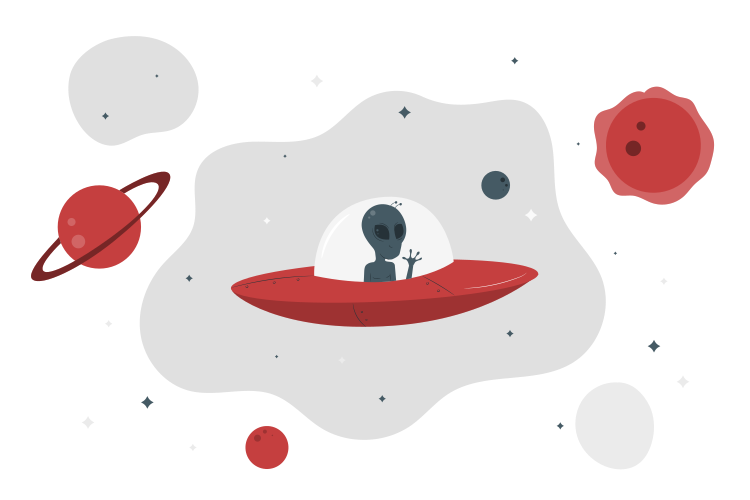
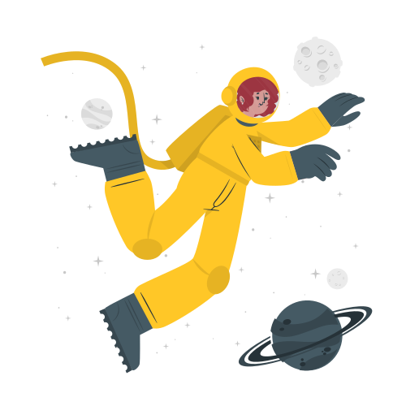
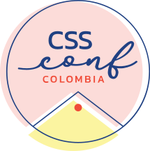
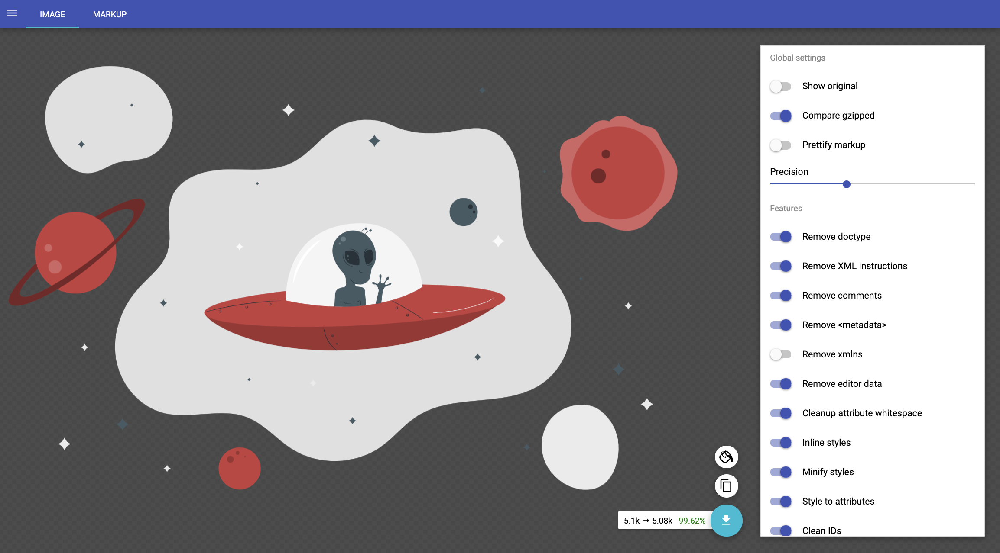
Which is the best option to animate a SVG ?


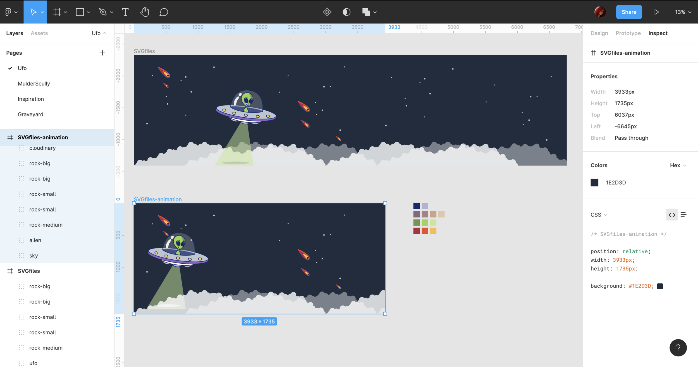
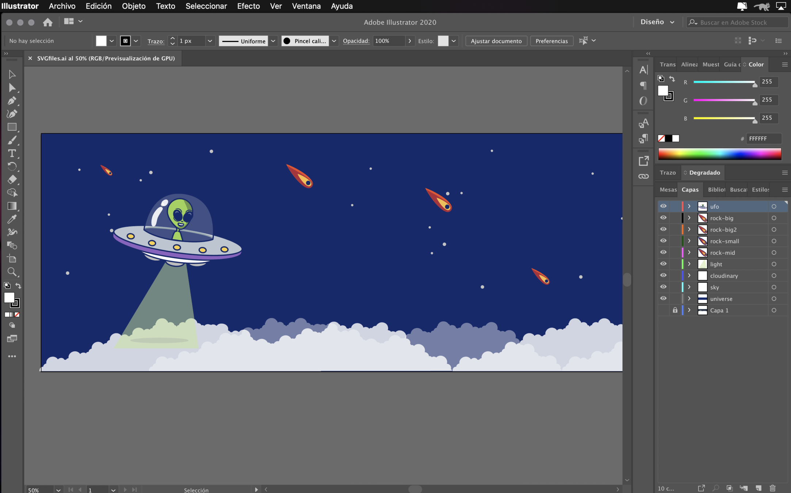
So, why animate?
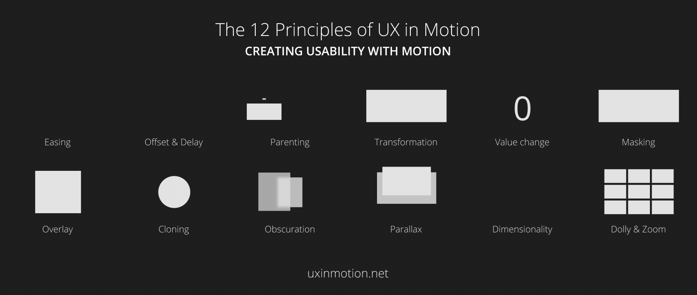
@keyframes [name] {
[keyframe selector] {CSS styles}
}
@keyframes spin {
from {
transform: rotate(0deg);
}
to {
transform: rotate(360deg);
}
}
.ufo {
animation-duration: 2s;
animation-name: spin;
}/*
Part 1: Animation
Here is where we would put our full animation.
*/
.ufo {
animation: rotation 2s infinite linear;
}
/*
Part 2: Media query
Here is where we would put our partial or no animation.
*/
@media (prefers-reduced-motion: reduce) {
.ufo {
animation: none;
}
}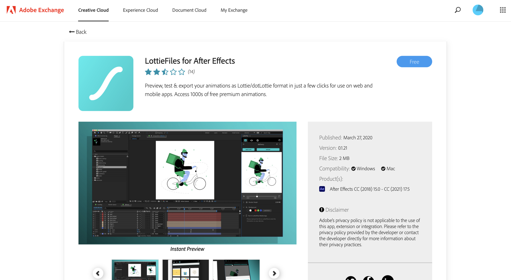
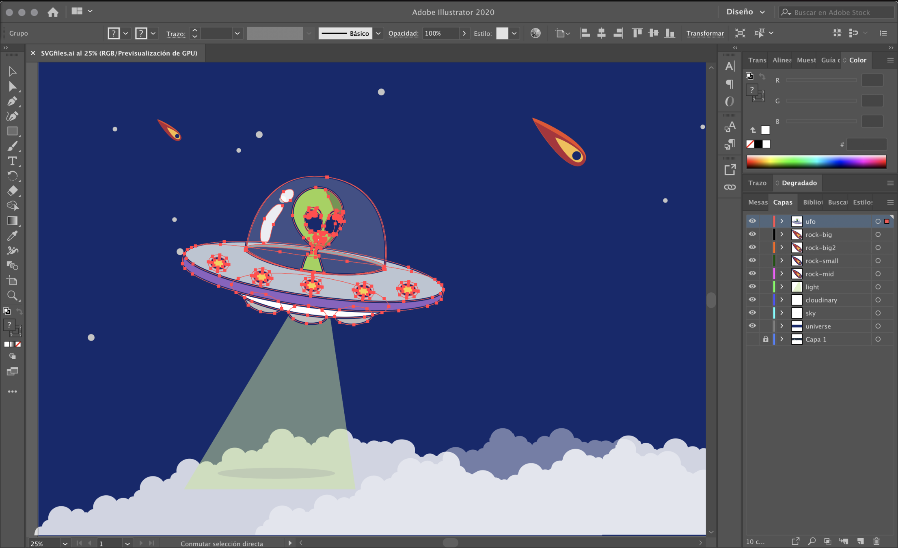
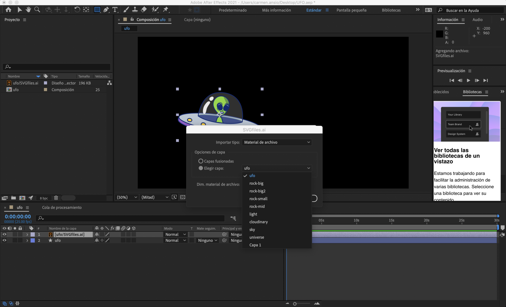
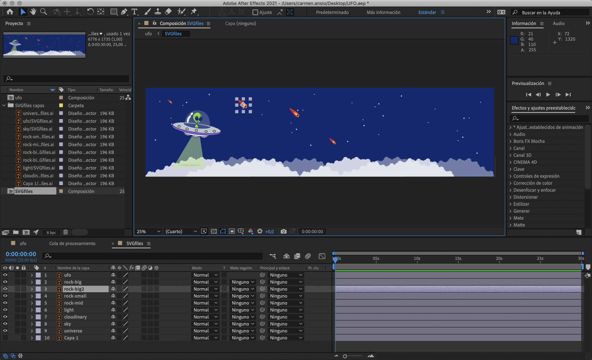
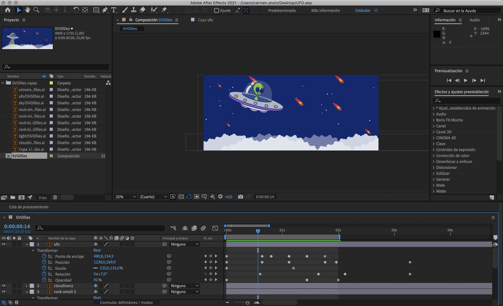
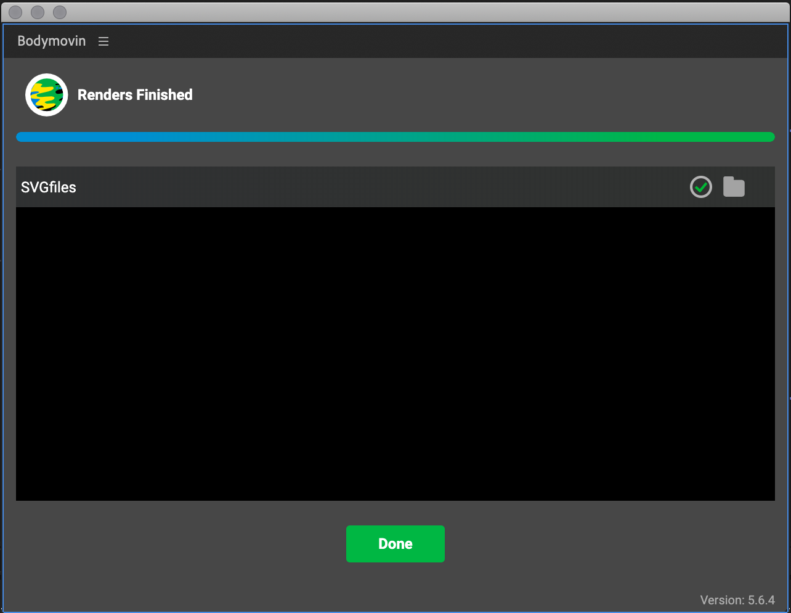
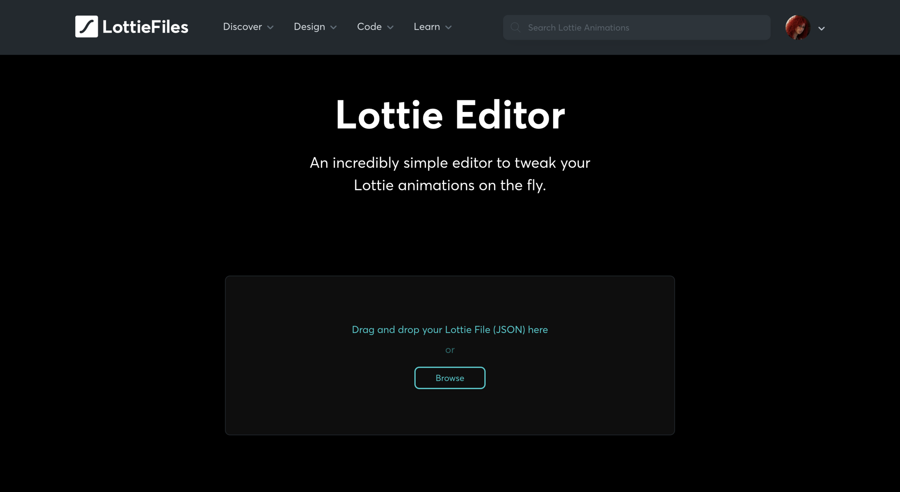
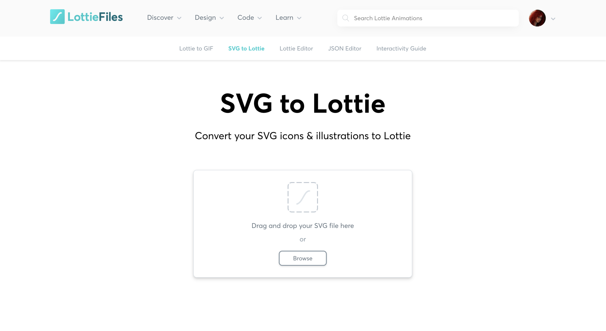
People to follow fork @nucliweb